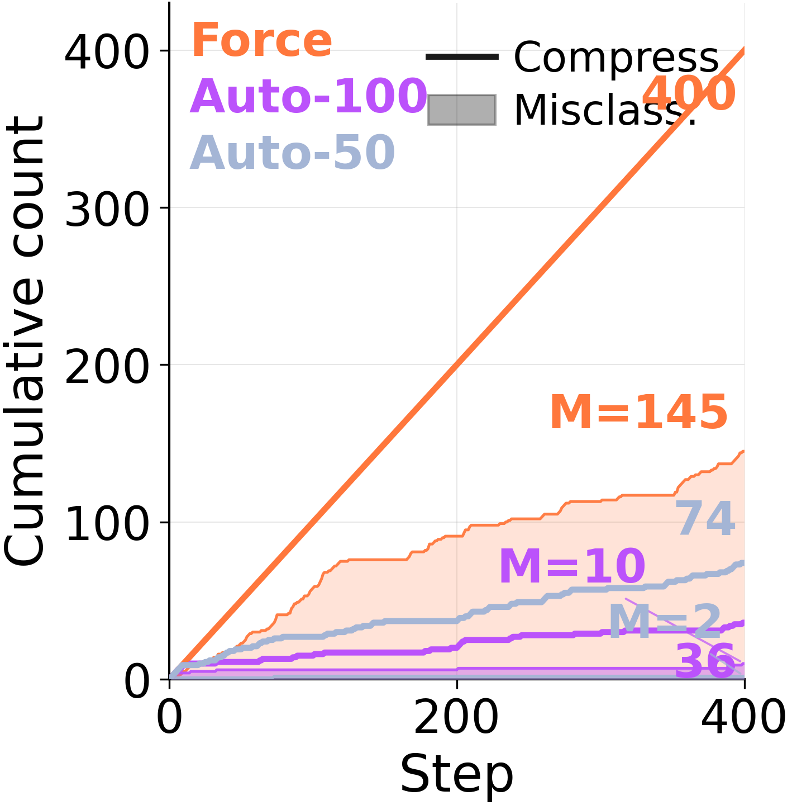

Misgrouping
Before abstracting, the consolidator decides which episodes belong together. When forced to consolidate every step, it pools episodes that share little underlying structure.
Under forced consolidation on ARC-AGI Stream, the model frequently combines memory entries across distinct problem classes. When given autonomy, it eventually converges to a clean episodic store covering each of the 6 problem types — but only after 568 examples have elapsed. The capacity to segment is there. The forced rewrite overrides it.
When to use: A large hollow rectangular frame encloses some objects while other objects lie outside it … In the kept interior objects, a single distinguished cell is changed based on a relation to a matching object outside the frame, often when an outside object has the same shape as an inside object.
Strategy: … (5) For each interior object, look for an exterior object with the same shape signature… (6) If an interior object has such a matching exterior counterpart, mark the center cell of the interior object's bounding box with the exterior object's color.
